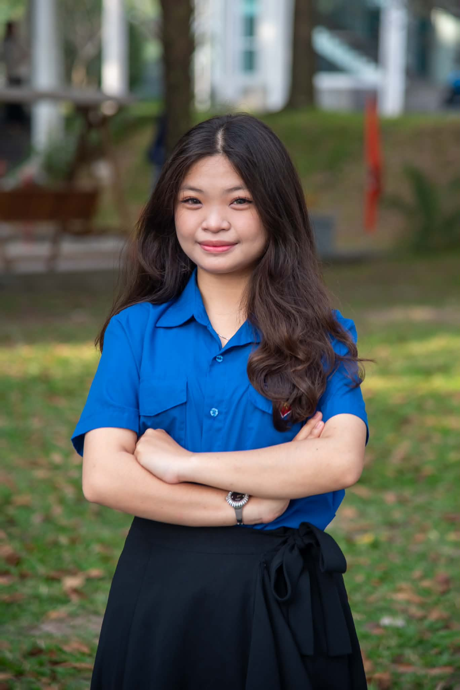

HUYNH CHAU NHU HUYEN
Digital Business & Artificial Intelligence Student
|

|
University: University of Economics and Law
Email: huyenpiano1711@gmail.com
Phone: (84+)333100116
Location: Ho Chi Minh City, Vietnam
|
Professional Summary
Third-year student at the University of Economics and Law (UEL), majoring in Digital Business
and Artificial Intelligence. Interested in technology, data, and business applications. Through
academic coursework and university projects, I have developed basic knowledge of programming,
databases, data analysis, information systems, and web development. I am a curious and
responsible learner who enjoys working in teams, exploring new technologies, and continuously
developing my skills.
Education
University of Economics and Law (UEL)
B.S. in Digital Business and Artificial Intelligence
2024 – Present
GPA: 8.58/10
Relevant Coursework:
- Database Management Systems
- Systems Analysis and Design
- Business Information Systems
- Programming
- Web Development
- Data Analysis
Languages:
- English - IELTS Academic 6.0
- Japanese - JLPT N4
Experience & Projects
Team Leader - Capstone Project: AI Agent for Shopee Competitor Research
(2026)
- Built an n8n / Python / Streamlit automation pipeline for competitor research.
- Wrote business & technical specifications for Smart Master Data, Pricing Integrity, Multi-Variable Tactical Alerting, and SOV & Sentiment features.
- Designed UI wireframes and refined Use Case and Sequence diagrams.
- Prepared the poster submission for the NVAITC Symposium 2026.
Team Leader - Digital Marketing Analytics Report
(2026)
- Compared VPS Securities, SSI, and Vietcap across Facebook, TikTok, YouTube, Website, and earned media.
- Built an analytical framework using KPIs, NLP topic clustering, Net Sentiment Score (NSS), and Share of Voice (SOV).
- Wrote and edited a 139-page report with APA 7 citations; built an interactive Chart.js dashboard.
Team Leader - ISAD/CIMS Project: Custom Drink Builder for The Coffee House
(2026)
- Wrote BRD/SRD documents and modeled AS-IS/TO-BE processes using BPMN.
- Built Use Case, Sequence, and Class diagrams, plus data validation tables.
- Coordinated a 4-person team and prepared the presentation and Q&A script.
English Tutor
(2025 – Present)
- Designed vocabulary practice materials for Grade 7 students using the Global Success textbook.
Technical Skills
- Business Analysis: UML, BPMN, Use Case/Sequence/Class Diagrams, BRD/SRD
- Programming & Data: Python (pandas), SQL Server
- Automation: n8n, Streamlit
- Data Visualization: Chart.js
- Documentation: python-docx, pptxgenjs
- Soft Skills: Teamwork, leadership, presenting